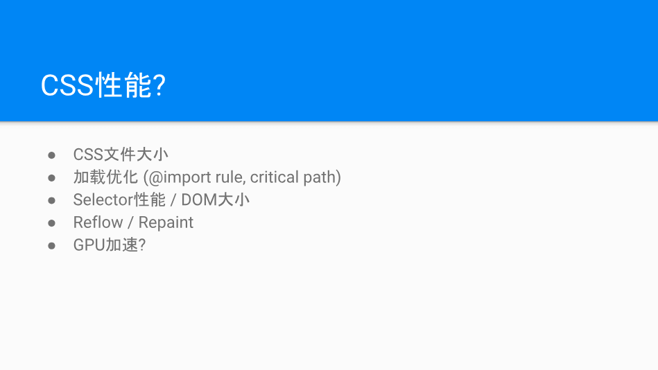
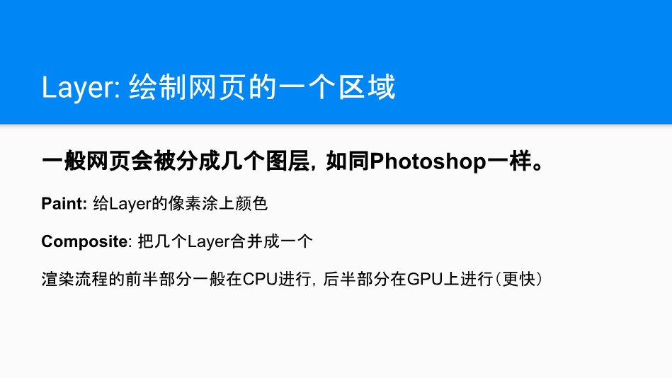
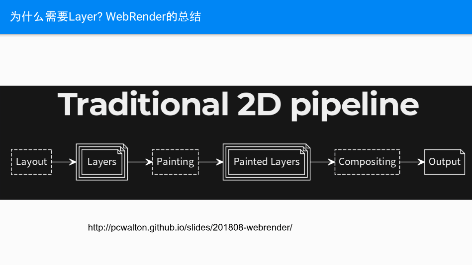
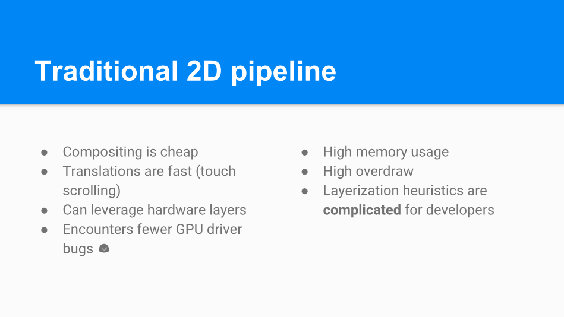
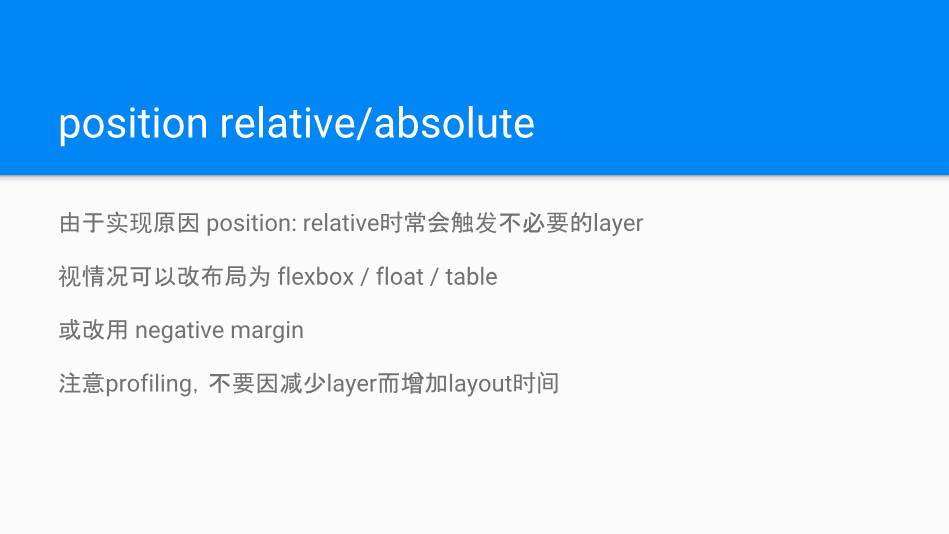
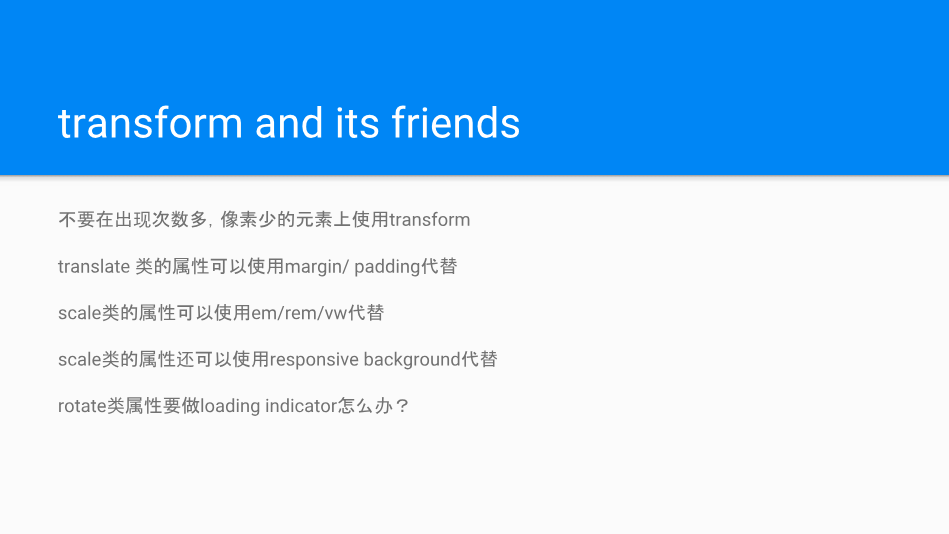
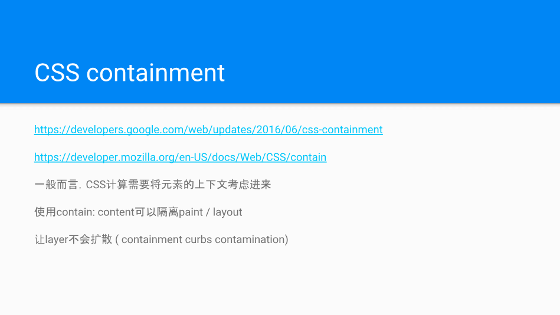
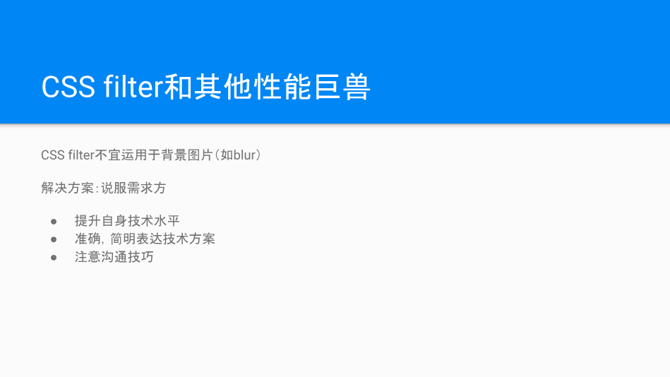
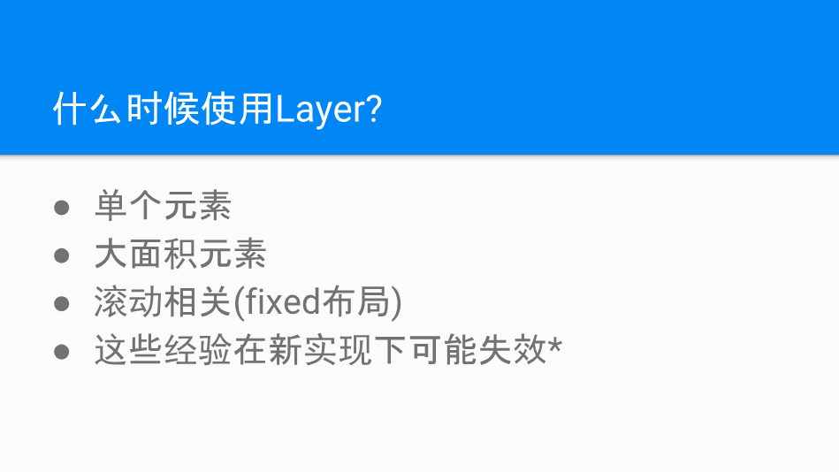

2018,09,15 in Shanghai
第一次参加 FCC 线下聚会，将一些收获记录至此 :)
1、Layers: a case study of CSS optimization - 🐑🐑🐑(吴名扬)；

CSS 文件大小
尽可能的利用工具去减少文件体积即可，说白了就是代码压缩。
加载优化 (@import rule, critical path)
减少加载阻塞，减少使用@import (浏览器不能并行下载样式，使用@import会导致页面增加额外的往返开销)，可通过使用<link>标签（可以并行下载 CSS 文件）替代@import，需要注意的是一个页面中的 CSS 文件不宜过多，否则应简化和合并外部 CSS 文件以节省请求时间，从而提升页面加载速度。
选择器性能
下面可以结合实际应用来介绍一些 Best Practice：
- 优先使用
class选择器，可替代如多层标签选择器规则，增加浏览器匹配效率。 - 谨慎使用
id选择器，id选择器在页面中是唯一的，不利于团队协作和代码维护。 - 利用选择器的继承性，避免过分限制选择器导致浏览器工作效率降低。
- 避免 CSS 正则表达式规则。
Reflow
减少重排（Reflow），重排意味着元素位置发生改变，对于交互性较强的 web 应用来说，重排是在所难免的，但仍然可以从以下几方面进行优化：
- 不要一条一条地修改 DOM 的样式，预先定义好 class，然后修改 DOM 的 className。
- DOM 离线后修改，如先把 DOM 元素 给
display:none;(有一次 Reflow)，然后修改100次，最后再把它显示出来。 - 尽可能不要修改影响范围较大的 DOM 元素。
- 为动画元素使用绝对定位
absolute/fixed。 - 不使用 table 布局，可能很小的一个小改动会造成整个 table 的重排。
Repaint
减少重绘（Repaint），重绘意味着元素位置不变，浏览器仅仅根据新的样式重绘该元素（如border-color, background-color，visibility等）。
优化动画，启用GPU硬件加速
GPU 加速可以不仅应用于3D，而且也可以应用于2D，通常可以应用于Canvas2D，布局合成（Layout Compositing）, CSS3转换（transitions），CSS3 3D变换（transforms），WebGL和视频(video)。
回顾一下这些 CSS性能优化 方案，但是本次讲的主角是 Layer，那么说到什么是 Layer，以及对症下药的问题。PPT中，杨总以及写的很直白了，所以我就直接搬过来了。接下来请看图：
再次提一下浏览器渲染流程：JavaScript -> Style -> Layout -> Paint -> Composite



如何对症下药：减少Layer的生成和扩散
- position relative/absolute
- transform reduction
- contain: content
- CSS filter





要解决性能问题，先理解问题根源。
2、webRTC的场景创新和体验优化 - 韦躐晟；
3、点融CIS基础设施 - 林选伟；
4、函数式语言: ClosureScript 在前端开发的体验 - 题叶；
关于题叶老师分享的 ClojureScript 我觉得我还是被题叶老师的键盘手速给深深的吸引，看着他在讲台上流畅的操作着他的 MacBook ，真的是强的不谈。关于 ClojureScript 的一些信息，直接点击标题前往查看即可。
5、在错误中寻找正确的方向: 应用升级和重构之路 - WiWi；
相关链接
- 本文链接: https://zongzi531.com/2018/09/19/%E5%8F%82%E5%8A%A0FCC%E4%B8%8A%E6%B5%B7%E5%89%8D%E7%AB%AF%E6%8A%80%E6%9C%AF%E7%BE%A4%E7%BA%BF%E4%B8%8BMeetup/
- 版权声明: 本博客所有文章除特别声明外，均采用 CC BY-NC-SA 3.0 许可协议。转载请注明出处！